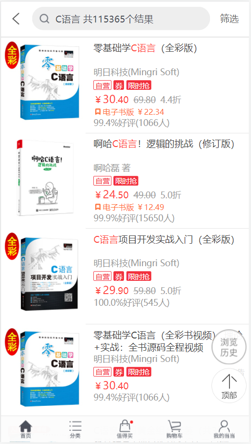

初学者如何找到适合自己的编程书籍？
嗨，大家好，我是严长生，2014 年离职后我成了一个自由职业者，开始全职运营C语言中文网，发布和参与了 40 多套编程教材，并收到清华大学出版社、电子工业出版社、机械工业出版社、邮电出版社等八家顶级出版社的出书邀请。
对于选择编程书籍，我有一些自己的看法，也有一些自己的技巧，希望分享给大家，让大家少走弯路。
前面我吐槽过很多编程书籍都是垃圾，不但不是知识进步的阶梯，反而是知识进步的障碍，有兴趣的读者可以转到《很多编程书籍都是垃圾，大家一定要擦亮眼睛，不要被误导》。在这篇文章中我也给自己挖了个坑，说过要教大家如何找到优质书籍，好吧，现在我就来填坑吧。
首先，什么是优质书籍呢？对初学者来说，那些通俗易懂、生动有趣的入门书籍是最合适的；对已经工作的程序员来说，那么深入底层、刨根问底的进阶书籍是最合适的。只有适合的，才是最好的。
接下来，我给大家介绍两种找到优质书籍的办法。
比如你要学习C语言，那么就在搜索框中输入“C语言”，会看到很多相关图书：
那些在搜索结果中排名靠前的图书，销量比较大，一般质量都不错，我们可以从前往后打开每个链接浏览一下，看看这本书是否适合自己。
如何初步判断一本书是否适合自己呢？很简单，看书的目录。一本好书，目录一般也会出彩，能勾起读者的兴趣。如果你觉得一本书的目录索然无味，那么它的内容大概率也会非常平淡。
当然，除了目录，还要阅读一下书的内容，看看自己是否能读得懂。有些图书有电子版，你可以试读一部分；如果没有电子版，那你只能借助一些不道德的途径获取电子版（其实不太推荐，会损害作者和出版社的利益）。
如果书的目录和内容都不错，你觉得适合自己，那就购买吧。当然，你可能会找到好几本不错的书，怎么办呢？经济条件允许的话就都买了吧，反正学习编程一本书也不够，你需要多读几本，博取各家精华。
怎么找呢？很多简单，输入关键词直接搜索就可以。比如你想学习C语言，那么就在搜索框输入“C语言 书籍”，会看到很多搜索结果：
图2：百度C语言书籍搜索结果
你看，有这么多热心的网友已经告诉你答案了，其中排名第一的文章就是我写的 ^_^。
值得注意的是，虽然各位网友推荐的书籍质量都不错，但并不是所有的都适合初学者，有些书籍还是有深度的，需要一定的知识积累，大家注意鉴别。
如何鉴别网友推荐的书籍是否适合自己呢？还是采用借助在线图书销售平台看一下目录和内容。
对于自学者，找到优质的学习资料是非常重要的，这决定了你是否能学会编程，大家一定要善于使用各种互联网平台，尤其是搜索引擎，没有什么是百度一下解决不了的。在互联网如此发达的今天，如果你还因为信息不对称而找不到学习资料，那将是自废武功。
对于选择编程书籍，我有一些自己的看法，也有一些自己的技巧，希望分享给大家，让大家少走弯路。
前面我吐槽过很多编程书籍都是垃圾，不但不是知识进步的阶梯，反而是知识进步的障碍，有兴趣的读者可以转到《很多编程书籍都是垃圾，大家一定要擦亮眼睛，不要被误导》。在这篇文章中我也给自己挖了个坑，说过要教大家如何找到优质书籍，好吧，现在我就来填坑吧。
首先，什么是优质书籍呢？对初学者来说，那些通俗易懂、生动有趣的入门书籍是最合适的；对已经工作的程序员来说，那么深入底层、刨根问底的进阶书籍是最合适的。只有适合的，才是最好的。
接下来，我给大家介绍两种找到优质书籍的办法。
1. 借助线上图书销售平台
有很多线上图书销售平台，比如当当网、京东、淘宝等，它们是一个巨大的图书数据库，基本收录了所有图书，而且检索功能很方便。我经常使用当当网。比如你要学习C语言，那么就在搜索框中输入“C语言”，会看到很多相关图书：

图1：当当网C语言书籍搜索结果
图1：当当网C语言书籍搜索结果
那些在搜索结果中排名靠前的图书，销量比较大，一般质量都不错，我们可以从前往后打开每个链接浏览一下，看看这本书是否适合自己。
如何初步判断一本书是否适合自己呢？很简单，看书的目录。一本好书，目录一般也会出彩，能勾起读者的兴趣。如果你觉得一本书的目录索然无味，那么它的内容大概率也会非常平淡。
当然，除了目录，还要阅读一下书的内容，看看自己是否能读得懂。有些图书有电子版，你可以试读一部分；如果没有电子版，那你只能借助一些不道德的途径获取电子版（其实不太推荐，会损害作者和出版社的利益）。
如果书的目录和内容都不错，你觉得适合自己，那就购买吧。当然，你可能会找到好几本不错的书，怎么办呢？经济条件允许的话就都买了吧，反正学习编程一本书也不够，你需要多读几本，博取各家精华。
2. 借助搜索引擎
有很多热心的网友会分享优质书籍，但是互联网就是一个大海，我们需要借助搜索引擎把网友的文章找出来。我经常使用百度。怎么找呢？很多简单，输入关键词直接搜索就可以。比如你想学习C语言，那么就在搜索框输入“C语言 书籍”，会看到很多搜索结果：
图2：百度C语言书籍搜索结果
你看，有这么多热心的网友已经告诉你答案了，其中排名第一的文章就是我写的 ^_^。
值得注意的是，虽然各位网友推荐的书籍质量都不错，但并不是所有的都适合初学者，有些书籍还是有深度的，需要一定的知识积累，大家注意鉴别。
如何鉴别网友推荐的书籍是否适合自己呢？还是采用借助在线图书销售平台看一下目录和内容。
总结
编程书籍有很多，良莠不齐，读者需要借助互联网将优质书籍挖掘出来。优质书籍才是知识进步的阶梯，垃圾书籍是知识进步的障碍。对于自学者，找到优质的学习资料是非常重要的，这决定了你是否能学会编程，大家一定要善于使用各种互联网平台，尤其是搜索引擎，没有什么是百度一下解决不了的。在互联网如此发达的今天，如果你还因为信息不对称而找不到学习资料，那将是自废武功。
关注公众号「站长严长生」，在手机上阅读所有教程，随时随地都能学习。内含一款搜索神器，免费下载全网书籍和视频。

微信扫码关注公众号